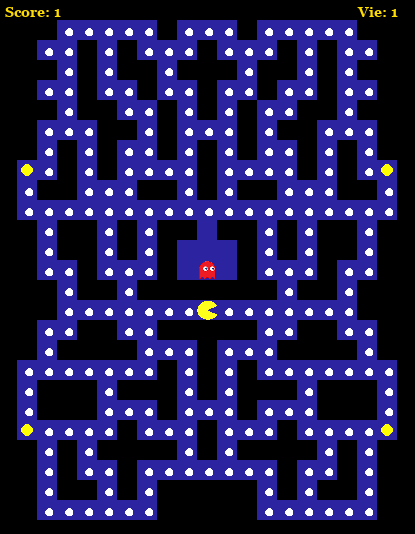
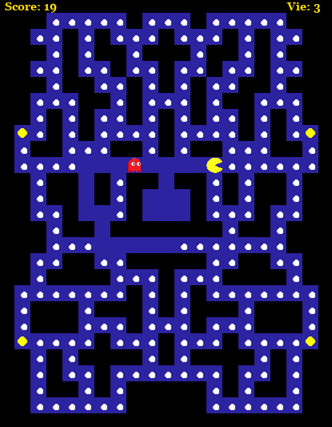
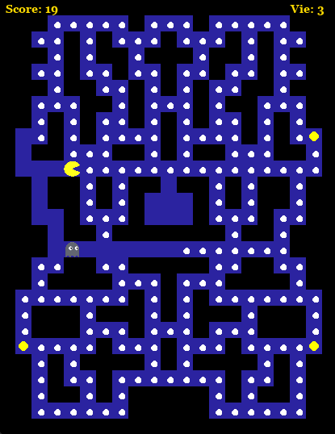
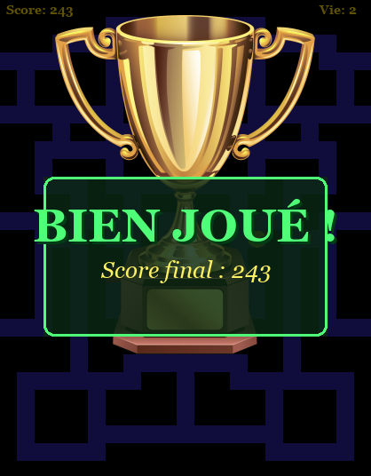
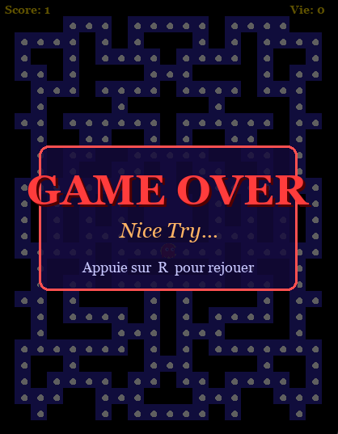
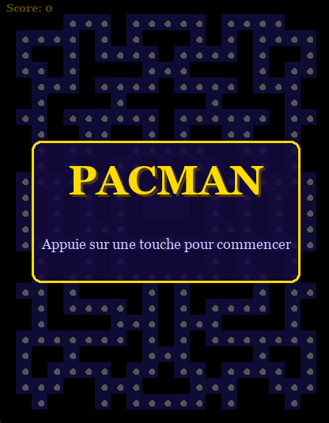

Click to play demo
A Python Pac-Man game built with Pygame featuring 5 unique hand-crafted mazes selected at random each game. The project focuses on a clean game loop, tile-based collision detection, and a wrap-around tunnel system on maze borders.
The ghost uses a Dijkstra pathfinding algorithm to always compute the shortest path to the player in real time — it switches to a frightened grey sprite when Pac-Man eats a power pellet, letting you turn the tables.
Pygame engine initialization and grid system





